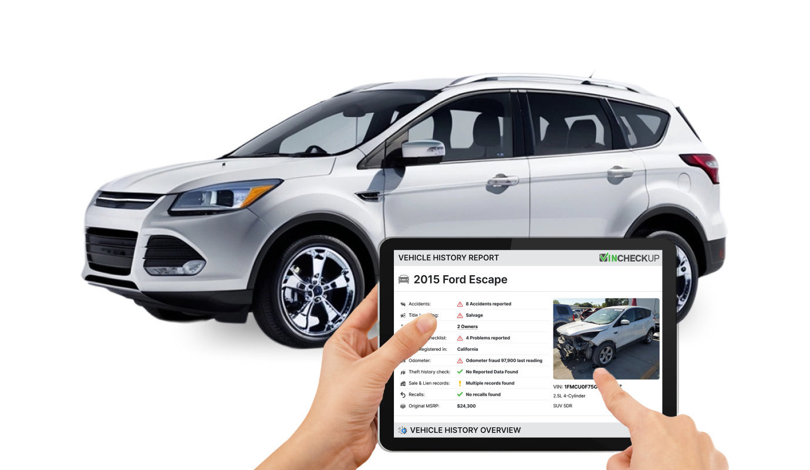
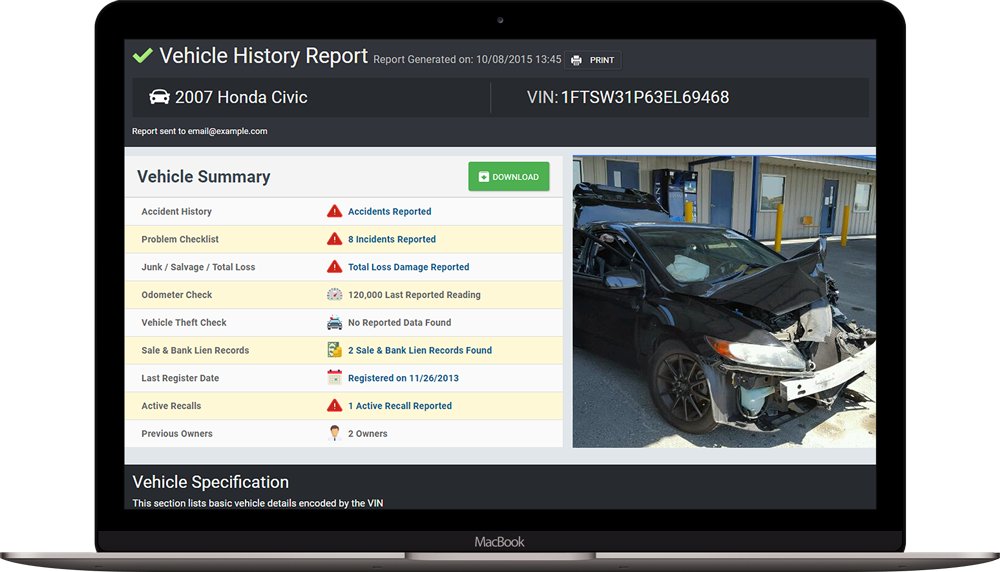

Affiliate disclosure: This independent page contains an affiliate link. We may earn a commission at no additional cost to you.
VINCheckup Mileage & Odometer History: Can It Detect Mileage Problems?

This independent guide focuses on VINCheckup mileage odometer history and on how a used-car buyer can interpret the information responsibly. VINCheckup currently offers accident, title, odometer and other history checks, while its own disclaimer makes clear that aggregated vehicle-history data can contain gaps.
What Does VINCheckup's Odometer Check Do?
The current pricing page says VINCheckup uses an advanced algorithm to parse events reported by DMVs in a vehicle's history and check for inconsistencies that could indicate odometer rollback. Its affiliate material describes this as verification of registered vehicle mileage.
A useful way to handle this information is to build a timeline. Compare title events, reported mileage, accident or total-loss entries, sales, service records and the seller's documentation. A single database field rarely tells the whole story; consistency across independent evidence is more persuasive.
For a vehicle you are seriously considering, use the report to identify questions to ask rather than to eliminate the need for due diligence. The more expensive or unusual the vehicle, the stronger the case for cross-checking important records and obtaining an independent pre-purchase inspection.
What Does an Odometer Rollback Look Like in a History Timeline?
The simplest warning pattern is a later record showing fewer miles than an earlier one. But buyers should also look for implausibly small increases over long periods, sudden large jumps, unexplained gaps and mileage that conflicts with service or sale records. Not every anomaly proves fraud; data-entry errors can occur.
A useful way to handle this information is to build a timeline. Compare title events, reported mileage, accident or total-loss entries, sales, service records and the seller's documentation. A single database field rarely tells the whole story; consistency across independent evidence is more persuasive.
For a vehicle you are seriously considering, use the report to identify questions to ask rather than to eliminate the need for due diligence. The more expensive or unusual the vehicle, the stronger the case for cross-checking important records and obtaining an independent pre-purchase inspection.
Why DMV-Reported Readings Matter
Official title or registration events can create useful mileage checkpoints. A sequence of readings over several years can help establish whether the odometer progression is plausible. VINCheckup says its reports use title and other records, but availability varies by vehicle and jurisdiction.
A useful way to handle this information is to build a timeline. Compare title events, reported mileage, accident or total-loss entries, sales, service records and the seller's documentation. A single database field rarely tells the whole story; consistency across independent evidence is more persuasive.
For a vehicle you are seriously considering, use the report to identify questions to ask rather than to eliminate the need for due diligence. The more expensive or unusual the vehicle, the stronger the case for cross-checking important records and obtaining an independent pre-purchase inspection.

Can Mileage Records Be Missing?
Yes. VINCheckup explicitly warns that data availability depends on the sources from which information is aggregated and that information may not always be accurate or current. A gap in the timeline therefore does not automatically mean the vehicle was not driven or that something fraudulent happened.
A useful way to handle this information is to build a timeline. Compare title events, reported mileage, accident or total-loss entries, sales, service records and the seller's documentation. A single database field rarely tells the whole story; consistency across independent evidence is more persuasive.
For a vehicle you are seriously considering, use the report to identify questions to ask rather than to eliminate the need for due diligence. The more expensive or unusual the vehicle, the stronger the case for cross-checking important records and obtaining an independent pre-purchase inspection.
Odometer Rollback vs Odometer Replacement
A lower reading can have legitimate explanations, including instrument-cluster replacement or data-entry mistakes. The report should be a trigger for questions and documentation. Ask the seller for repair invoices or records that explain a discontinuity.
A useful way to handle this information is to build a timeline. Compare title events, reported mileage, accident or total-loss entries, sales, service records and the seller's documentation. A single database field rarely tells the whole story; consistency across independent evidence is more persuasive.
For a vehicle you are seriously considering, use the report to identify questions to ask rather than to eliminate the need for due diligence. The more expensive or unusual the vehicle, the stronger the case for cross-checking important records and obtaining an independent pre-purchase inspection.
Compare Mileage With Service History
Service records can provide additional mileage checkpoints. VINCheckup says reports may include possible dealer maintenance records. If a service entry, sale listing and DMV event all show a consistent progression, confidence increases; if they conflict, investigate.
A useful way to handle this information is to build a timeline. Compare title events, reported mileage, accident or total-loss entries, sales, service records and the seller's documentation. A single database field rarely tells the whole story; consistency across independent evidence is more persuasive.
For a vehicle you are seriously considering, use the report to identify questions to ask rather than to eliminate the need for due diligence. The more expensive or unusual the vehicle, the stronger the case for cross-checking important records and obtaining an independent pre-purchase inspection.
Physical Wear Still Matters
A very low-mileage claim paired with heavily worn pedals, steering wheel, seat bolsters or controls can justify closer inspection. Physical wear is not a precise odometer, but it is another piece of evidence that should make sense alongside the database timeline.
A useful way to handle this information is to build a timeline. Compare title events, reported mileage, accident or total-loss entries, sales, service records and the seller's documentation. A single database field rarely tells the whole story; consistency across independent evidence is more persuasive.
For a vehicle you are seriously considering, use the report to identify questions to ask rather than to eliminate the need for due diligence. The more expensive or unusual the vehicle, the stronger the case for cross-checking important records and obtaining an independent pre-purchase inspection.
What If VINCheckup Finds a Possible Rollback?
Do not rush into the purchase. Review the dates and readings, ask the seller for an explanation and supporting paperwork, compare another history source if appropriate, and have the vehicle inspected. Mileage discrepancies can materially affect value and may have legal implications.
A useful way to handle this information is to build a timeline. Compare title events, reported mileage, accident or total-loss entries, sales, service records and the seller's documentation. A single database field rarely tells the whole story; consistency across independent evidence is more persuasive.
For a vehicle you are seriously considering, use the report to identify questions to ask rather than to eliminate the need for due diligence. The more expensive or unusual the vehicle, the stronger the case for cross-checking important records and obtaining an independent pre-purchase inspection.
How to Use Mileage Data When Negotiating
Verified history problems can affect price, but do not accuse a seller of fraud based on one ambiguous data point. Present the timeline, ask for documentation and make your purchase decision based on the evidence you can verify.
A useful way to handle this information is to build a timeline. Compare title events, reported mileage, accident or total-loss entries, sales, service records and the seller's documentation. A single database field rarely tells the whole story; consistency across independent evidence is more persuasive.
For a vehicle you are seriously considering, use the report to identify questions to ask rather than to eliminate the need for due diligence. The more expensive or unusual the vehicle, the stronger the case for cross-checking important records and obtaining an independent pre-purchase inspection.
Frequently Asked Questions
Does VINCheckup check odometer rollback?
Yes. VINCheckup says it analyzes reported events for mileage inconsistencies that may indicate rollback.
Where does the mileage data come from?
VINCheckup specifically refers to events reported by DMVs and also aggregates information from multiple sources.
Does a mileage anomaly prove fraud?
No. Data-entry errors and legitimate odometer or cluster replacement can also create anomalies.
Can mileage records be missing?
Yes. VINCheckup says data availability and completeness depend on its sources.
What should I do if mileage looks wrong?
Ask for documentation, cross-check other records and consider an independent inspection before buying.
Used-Car Buyer Checklist
Confirm the VIN on the vehicle and documents, review accident and title history, follow the mileage timeline, check salvage/reconstructed and total-loss indicators, examine service and sale records when available, compare the seller's statements with the report, and inspect the actual vehicle. If an important fact remains uncertain, investigate it before money changes hands.